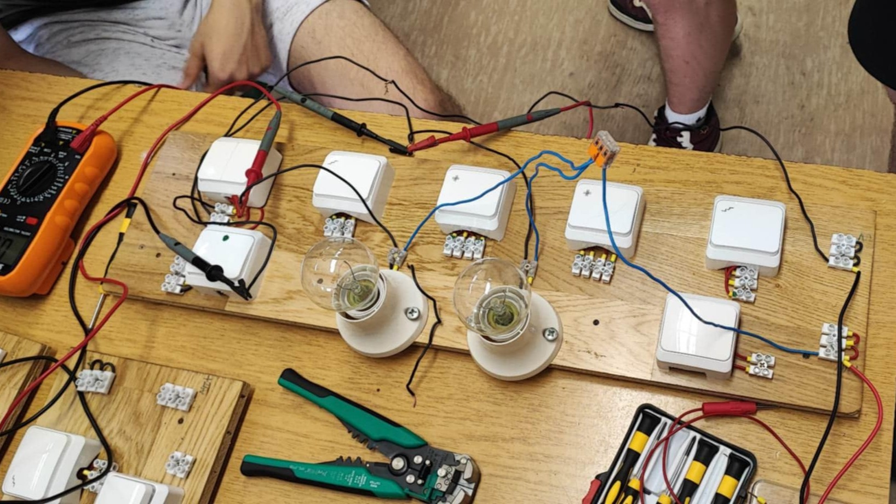

Az 5 év alatt sok dologba volt lehetőségem betekintést nyerni és beletanulni. Az iskolában megszereztem a megfelelő alaptudást mind programozás terén, Pythonban és HTML-ben, mind az elektronika területén. Eleinte alapkapcsolásokat csináltunk izzók és kapcsolók segítségével. Idővel társultak mellé a "komolyabb", komplexebb kapcsolások is mint például egy PLC, háromfázisú motorok vagy frekvenciaváltók és gombos, relés vezérlések. Utóbbiakra a duális képzés során volt lehetőségem és sokat fejlődtek az elektronikai ismereteim ez alatt. Már bátran nyúlok olyan projektekhez amiktől pár éve tartottam mert nem ismertem. Az évek alatt magabiztosabb lettem és bátrabban kezdek bele hasonló projektekbe akár otthon is, a szabadidőmet rááldozva.